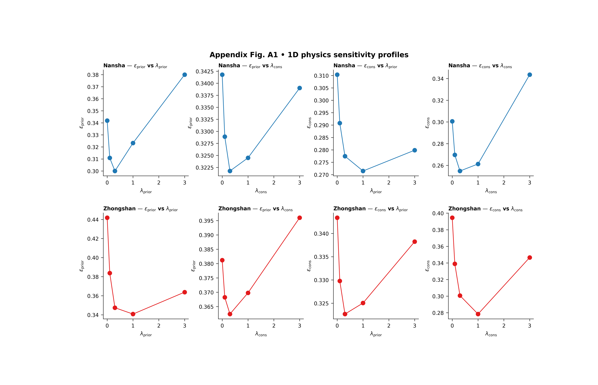

Note
Go to the end to download the full example code.
Physics profiles: reducing a 2D lambda landscape into readable 1D lessons#
This example teaches you how to read the GeoPrior physics-profiles figure.
The 2D sensitivity heatmap is powerful, but sometimes it is still too dense for fast interpretation. A scientific reader often wants a simpler question:
What happens if I vary only \(\lambda_prior\)?
What happens if I vary only \(\lambda_cons\)?
That is exactly what the physics-profiles figure does.
Instead of showing the full 2D landscape at once, it turns the lambda study into four profile questions for each city:
prior metric vs \(\lambda_prior\)
prior metric vs \(\lambda_cons\)
consolidation metric vs \(\lambda_prior\)
consolidation metric vs \(\lambda_cons\)
Why this figure matters#
A 2D heatmap is excellent for exploration, but a 1D profile is often easier to explain in a paper, a meeting, or a teaching page.
The value of this figure is that it shows directional sensitivity.
It helps the reader see:
whether a metric changes smoothly or abruptly,
whether one lambda matters much more than the other,
whether the response is monotonic or U-shaped,
and whether the two cities react similarly or differently.
This gallery page uses a synthetic ablation table so the lesson is fully executable during the documentation build.
Imports#
We use the real plotting entrypoint from the project code. So this page teaches the actual script rather than imitating it.
from __future__ import annotations
import json
import tempfile
from pathlib import Path
import matplotlib.image as mpimg
import matplotlib.pyplot as plt
import numpy as np
import pandas as pd
from geoprior._scripts.plot_physics_profiles import (
figA1_phys_profiles_main,
)
Step 1 - Build a compact lambda study#
The real script scans JSONL ablation records under:
<root>/**/ablation_records/ablation_record*.jsonl
So we create a small synthetic record set with that same shape.
We keep two cities:
Nansha
Zhongshan
and create a small grid in:
lambda_prior
lambda_cons
Unlike the previous 2D sensitivity gallery page, the goal here is not mainly to visualize the whole surface. The goal is to create surfaces whose profiles are easy to read once averaged over the other lambda.
lambda_prior_vals = np.array([0.0, 0.1, 0.3, 1.0, 3.0])
lambda_cons_vals = np.array([0.0, 0.1, 0.3, 1.0, 3.0])
Step 2 - Create synthetic ablation records#
The script reads JSON records, extracts the city, keeps only pde_mode=”both” when that column exists, and then computes:
metric vs lambda_prior averaged over lambda_cons
metric vs lambda_cons averaged over lambda_prior
So we shape the synthetic metrics to produce meaningful 1D curves:
one city will prefer moderate lambda_prior,
the other will prefer slightly stronger lambda_prior,
and the two metrics will not react in exactly the same way.
rows: list[dict[str, float | str]] = []
for city in ("Nansha", "Zhongshan"):
for lp in lambda_prior_vals:
for lc in lambda_cons_vals:
log_lp = np.log10(lp + 0.12)
log_lc = np.log10(lc + 0.12)
if city == "Nansha":
epsilon_prior = (
0.28
+ 0.14 * (log_lp + 0.35) ** 2
+ 0.04 * (log_lc + 0.15) ** 2
+ 0.015 * np.sin(1.5 * lp + 0.7 * lc)
)
epsilon_cons = (
0.23
+ 0.05 * (log_lp + 0.05) ** 2
+ 0.13 * (log_lc + 0.35) ** 2
+ 0.015 * np.cos(1.6 * lc + 0.4 * lp)
)
else:
epsilon_prior = (
0.31
+ 0.16 * (log_lp + 0.08) ** 2
+ 0.05 * (log_lc + 0.28) ** 2
+ 0.018 * np.sin(1.2 * lp + 0.5 * lc)
)
epsilon_cons = (
0.27
+ 0.05 * (log_lp + 0.28) ** 2
+ 0.15 * (log_lc + 0.10) ** 2
+ 0.015 * np.cos(1.8 * lc + 0.6 * lp)
)
coverage80 = np.clip(
0.93
- 0.11 * epsilon_prior
- 0.07 * epsilon_cons,
0.65,
0.98,
)
sharpness80 = 16.0 + 16.0 * epsilon_cons
r2 = np.clip(
0.94
- 0.52 * epsilon_prior
- 0.32 * epsilon_cons,
0.10,
0.95,
)
mae = 4.5 + 8.0 * epsilon_cons
mse = 22.0 + 18.0 * epsilon_prior + 9.0 * epsilon_cons
rows.append(
{
"city": city,
"model": "GeoPriorSubsNet",
"pde_mode": "both",
"lambda_prior": float(lp),
"lambda_cons": float(lc),
"epsilon_prior": float(epsilon_prior),
"epsilon_cons": float(epsilon_cons),
"coverage80": float(coverage80),
"sharpness80": float(sharpness80),
"r2": float(r2),
"mae": float(mae),
"mse": float(mse),
}
)
df = pd.DataFrame(rows)
print(df.head().to_string(index=False))
city model pde_mode lambda_prior lambda_cons epsilon_prior epsilon_cons coverage80 sharpness80 r2 mae mse
Nansha GeoPriorSubsNet both 0.0 0.0 0.349383 0.325275 0.868799 21.204395 0.654233 7.102198 31.216370
Nansha GeoPriorSubsNet both 0.0 0.1 0.336971 0.295023 0.872282 20.720371 0.670368 6.860185 30.720692
Nansha GeoPriorSubsNet both 0.0 0.3 0.330800 0.281314 0.873920 20.501027 0.677963 6.750514 30.486233
Nansha GeoPriorSubsNet both 0.0 1.0 0.336868 0.288197 0.872771 20.611152 0.672606 6.805576 30.657389
Nansha GeoPriorSubsNet both 0.0 3.0 0.355162 0.361866 0.865602 21.789862 0.639518 7.394931 31.649719
Step 3 - Read the 1D idea before plotting#
The key mathematical idea of this figure is simple:
metric vs lambda_prior means average over lambda_cons
metric vs lambda_cons means average over lambda_prior
We compute these averages explicitly for one city so the reader sees what the plotting script is summarizing.
nansha = df.loc[df["city"] == "Nansha"].copy()
nansha_prior_profile = (
nansha.groupby("lambda_prior", dropna=True)["epsilon_prior"]
.mean()
.reset_index()
.sort_values("lambda_prior")
)
nansha_cons_profile = (
nansha.groupby("lambda_cons", dropna=True)["epsilon_cons"]
.mean()
.reset_index()
.sort_values("lambda_cons")
)
print("")
print("Nansha prior profile (mean over lambda_cons):")
print(nansha_prior_profile.to_string(index=False))
print("")
print("Nansha cons profile (mean over lambda_prior):")
print(nansha_cons_profile.to_string(index=False))
Nansha prior profile (mean over lambda_cons):
lambda_prior epsilon_prior
0.0 0.341837
0.1 0.310855
0.3 0.300009
1.0 0.323237
3.0 0.380008
Nansha cons profile (mean over lambda_prior):
lambda_cons epsilon_cons
0.0 0.300587
0.1 0.269655
0.3 0.254820
1.0 0.261305
3.0 0.343588
Step 4 - Save the synthetic records in the same layout as the real script expects ————————————————————- The real script scans for JSONL files under ablation_records/. So we create exactly that folder structure.
tmp_dir = Path(
tempfile.mkdtemp(prefix="gp_sg_phys_prof_")
)
records_dir = tmp_dir / "synthetic_case" / "ablation_records"
records_dir.mkdir(parents=True, exist_ok=True)
jsonl_path = records_dir / "ablation_record.synthetic.jsonl"
with jsonl_path.open("w", encoding="utf-8") as f:
for rec in rows:
f.write(json.dumps(rec) + "\n")
print("")
print(f"JSONL records written to: {jsonl_path}")
JSONL records written to: C:\Users\Daniel\AppData\Local\Temp\gp_sg_phys_prof_3a7c6b1t\synthetic_case\ablation_records\ablation_record.synthetic.jsonl
Step 5 - Run the real plotting command#
The script chooses:
city A and city B
a prior-side metric
a cons-side metric
and then builds a 2x4 figure:
- Row 1:
city A
- Row 2:
city B
- Col 1:
metric_prior vs lambda_prior
- Col 2:
metric_prior vs lambda_cons
- Col 3:
metric_cons vs lambda_prior
- Col 4:
metric_cons vs lambda_cons
The backend can also mark the best point in each panel.
figA1_phys_profiles_main(
[
"--root",
str(tmp_dir),
"--city-a",
"Nansha",
"--city-b",
"Zhongshan",
"--metric-prior",
"epsilon_prior",
"--metric-cons",
"epsilon_cons",
"--show-best",
"true",
"--show-title",
"true",
"--show-panel-titles",
"true",
"--show-legend",
"false",
"--out-dir",
str(tmp_dir),
"--out",
"physics_profiles_gallery",
],
prog="plot-physics-profiles",
)
![Appendix Fig. A1 • 1D physics sensitivity profiles, Nansha — $\epsilon_{\mathrm{prior}}$ vs $\lambda_{\mathrm{prior}}$, Nansha — $\epsilon_{\mathrm{prior}}$ vs $\lambda_{\mathrm{cons}}$, Nansha — $\epsilon_{\mathrm{cons}}$ vs $\lambda_{\mathrm{prior}}$, Nansha — $\epsilon_{\mathrm{cons}}$ vs $\lambda_{\mathrm{cons}}$, Zhongshan — $\epsilon_{\mathrm{prior}}$ vs $\lambda_{\mathrm{prior}}$, Zhongshan — $\epsilon_{\mathrm{prior}}$ vs $\lambda_{\mathrm{cons}}$, Zhongshan — $\epsilon_{\mathrm{cons}}$ vs $\lambda_{\mathrm{prior}}$, Zhongshan — $\epsilon_{\mathrm{cons}}$ vs $\lambda_{\mathrm{cons}}$](../../_images/sphx_glr_plot_physics_profiles_001.png)
[OK] table -> C:\Users\Daniel\AppData\Local\Temp\gp_sg_phys_prof_3a7c6b1t\appendix_table_A1_phys_profiles_tidy.csv
[OK] figs -> C:\Users\Daniel\AppData\Local\Temp\gp_sg_phys_prof_3a7c6b1t\physics_profiles_gallery.png | C:\Users\Daniel\AppData\Local\Temp\gp_sg_phys_prof_3a7c6b1t\physics_profiles_gallery.pdf
Step 6 - Display the written figure inside the gallery page#
The real script writes PNG and PDF. We reload the PNG so the gallery page always shows the actual result from the real plotting code.
img = mpimg.imread(tmp_dir / "physics_profiles_gallery.png")
fig, ax = plt.subplots(figsize=(9.0, 5.8))
ax.imshow(img)
ax.axis("off")

(np.float64(-0.5), np.float64(5945.5), np.float64(3785.5), np.float64(-0.5))
Step 7 - Read the tidy table written by the backend#
The backend saves the raw tidy copy next to the figure. That makes the figure auditable and easy to reuse for later tables.
tidy_df = pd.read_csv(
tmp_dir / "appendix_table_A1_phys_profiles_tidy.csv"
)
print("")
print("Rows written to appendix_table_A1_phys_profiles_tidy.csv:")
print(len(tidy_df))
print("")
print("Counts by city:")
print(
tidy_df.groupby("city")
.size()
.rename("n_rows")
.to_string()
)
Rows written to appendix_table_A1_phys_profiles_tidy.csv:
50
Counts by city:
city
Nansha 25
Zhongshan 25
Step 8 - Compute the best profile points directly#
The script marks a best point in each line panel. For epsilon_prior and epsilon_cons, lower is better, so the marker will land at the minimum of the profile curve.
def best_profile_point(
frame: pd.DataFrame,
*,
city: str,
metric: str,
axis: str,
) -> tuple[float, float]:
sub = frame.loc[frame["city"] == city].copy()
prof = (
sub.groupby(axis, dropna=True)[metric]
.mean()
.reset_index()
.sort_values(axis)
)
idx = int(prof[metric].idxmin())
return (
float(prof.loc[idx, axis]),
float(prof.loc[idx, metric]),
)
for city in ("Nansha", "Zhongshan"):
x1, y1 = best_profile_point(
tidy_df,
city=city,
metric="epsilon_prior",
axis="lambda_prior",
)
x2, y2 = best_profile_point(
tidy_df,
city=city,
metric="epsilon_cons",
axis="lambda_cons",
)
print("")
print(city)
print(
" best epsilon_prior vs lambda_prior:"
f" lambda_prior={x1:.3g}, value={y1:.4f}"
)
print(
" best epsilon_cons vs lambda_cons:"
f" lambda_cons={x2:.3g}, value={y2:.4f}"
)
Nansha
best epsilon_prior vs lambda_prior: lambda_prior=0.3, value=0.3000
best epsilon_cons vs lambda_cons: lambda_cons=0.3, value=0.2548
Zhongshan
best epsilon_prior vs lambda_prior: lambda_prior=1, value=0.3408
best epsilon_cons vs lambda_cons: lambda_cons=1, value=0.2784
Step 9 - How to read the figure#
Let us now read the page as a scientific user.
Row logic#
Each row is a city. That makes the page easy to compare across geographical contexts.
In this lesson:
row 1 is Nansha
row 2 is Zhongshan
Column logic#
The first two columns belong to the prior-side metric. The last two columns belong to the consolidation-side metric.
Within each metric:
one panel varies lambda_prior
the other varies lambda_cons
This means the figure is answering a directional question:
“Which lambda matters more for this metric?”
How to interpret a flat profile#
If a profile is nearly flat, then that metric is not very sensitive to the chosen lambda over the tested range.
That is useful because it tells the user that some tuning freedom exists there.
How to interpret a steep profile#
If the curve changes quickly, the metric is sensitive to that lambda. That means the weight is doing real work, and poor choices may hurt the physics diagnostic more strongly.
How to interpret a U-shaped profile#
A U-shaped curve is often the most interesting one. It means:
too little physics pressure is not ideal,
too much physics pressure is also not ideal,
and a middle regime provides the best compromise.
That kind of curve is common in physics-guided models.
What the best-point marker means#
The script can mark the best point in each panel. For metrics such as epsilon_prior and epsilon_cons, the best point is the minimum. For metrics such as R^2 or coverage-like scores, the logic flips accordingly.
What this synthetic example teaches#
In this lesson, Nansha and Zhongshan were designed to have related but different profile shapes. That is realistic.
A lambda setting that improves one city smoothly may improve another more sharply, or at a shifted location. This is why profile figures are useful: they expose these directional differences very clearly.
Step 10 - Practical takeaway#
The 2D sensitivity map tells you where the landscape looks good. The 1D profile figure tells you how the landscape changes when you move in one direction.
In practice:
use the 2D figure to locate stable regions,
use the 1D profiles to explain those regions,
and use both together when deciding final lambda settings.
That is why this Appendix-style figure is genuinely useful: it makes a complicated tuning landscape easier to teach and easier to defend.
Command-line version#
The real script scans JSONL records under:
<root>/**/ablation_records/ablation_record*.jsonl
It accepts:
–root
–city-a
–city-b
–metric-prior
–metric-cons
–show-best
and the shared plot text/output options
Legacy dispatcher:
python -m scripts plot-physics-profiles \
--root results \
--city-a Nansha \
--city-b Zhongshan \
--metric-prior epsilon_prior \
--metric-cons epsilon_cons \
--show-best true \
--out appendix_fig_A1_phys_profiles
Modern CLI:
geoprior plot physics-profiles \
--root results \
--city-a Nansha \
--city-b Zhongshan \
--metric-prior epsilon_prior \
--metric-cons epsilon_cons \
--show-best true \
--out appendix_fig_A1_phys_profiles
The gallery page teaches the figure. The command line reproduces it in a workflow.
Total running time of the script: (0 minutes 21.698 seconds)